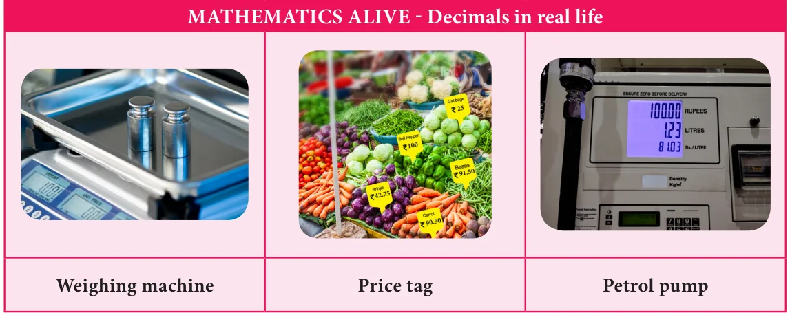

Rounding of decimals would be really useful for estimating amounts of money, duration of time, measure of distances and many other physical quantities. Let us learn the same here.

You can round decimals just in the same way as you round whole numbers.
To round a decimal:
- First underline the digit that is to be rounded. Then look at the digit to the right of the underlined digit.
- If that digit is less than 5, then the underlined digit remains the same.
- If that digit is greater than or equal to 5, add 1 to the underlined digit.
- After rounding of, ignore all the digits after the underlined digit.
Example 1.1 Round 2.367 to the nearest whole number.
Solution
Underline the digit to be rounded \(- 2.367\) Since the digit next to the underlined digit is 3 which is less than 5, the underlined digit 2 remains the same.
Also look at the number line shown below : 2.3
2.0 2.5 3.0 On the number line, we observe that 2.3 is closer to 2.0 than 3.0 Hence, the rounded value of 2.367 to the nearest whole number is 2.
Example 1.2 Round 99.95 to the nearest tenth place.
Solution
Underline the digit to be rounded 99.95. Since the digit right to the tenth place is 5, we add 1 to the tenth place (underlined digit) of 99.95 and we get 100.0.
Look at the number line shown below: 99.95
99.9 100.0 So, the rounded value of 99.95 is 100.0.
Example 1.3 Round 52.6583 upto 2 places of decimal.
Solution
Round 52.6583 upto 2 places of decimal means round to the nearest hundredths place.
Underlining the digit in the hundredth place of 52.6583 gives 52.6583. We observe that the digit after the hundredth place value is 8 which is more than 5. Therefore, we should add 1 to the underlined digit. Hence, we get 52.66.
So the rounded value of 52.6583 upto 2 places of decimal is 52.66.
Example 1.4 Round 189.0007 upto 3 places of decimal.
Solution:
Round 189.0007 upto 3 places of decimal means rounding to the nearest thousandth place.
Underlining the digit in the thousandth place of 189.0007 gives 189.0007 In 189.0007 we observe that the digit next to the thousandth place
value is 7, which is \(= 7.392\) Nowadays calculators, computers greater than 5. and even mobile phones were used Therefore, we should for multiplication and division of add 1 to the underlined decimals. But, actually multiplication digit. Hence, we get of decimals using logarithm tables will 189.001. be more useful and handy. So the rounded value of 189.0007 upto 3 places of decimal is 189.001
\(2.1 \times 3.52\)

- Round each of the following decimals to the nearest whole number.
- 8.71 (ii) 26.01 (iii) 69.48
- 103.72 (v) 49.84 (vi) 101.35
- 39.814 (viii) 1.23
- Round each decimal number to the given place value.
- 5.992 to tenth place
- 21.805 to hundredth place
- 35.0014 to thousandth place
- Round the following decimal numbers upto 1 places of decimal.
- 123.37 (ii) 19.99 (iii) 910.546
- Round the following decimal numbers upto 2 places of decimal.
- 87.755 (ii) 301.513 (iii) 79.997
- Round the following decimal numbers upto 3 places of decimal.
- 24.4003 (ii) 1251.2345 (iii)61.00203
1.3 Operations on Decimal Numbers
Already we are familiar with decimal numbers. We know how to represent a decimal number as a fraction and the place values of digits. Now, let us learn the operations on decimal numbers.